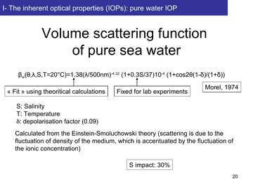
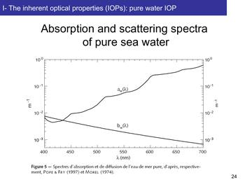

Home › B · Pure water
Water itself absorbs and scatters. In the clearest waters it dominates; everywhere else it is the baseline to which the other constituents are added (additivity). This module covers the pure-water VSF formulas of the lecture, their spectral dependence and the uncertainty on a_w.
Scattering by pure water
Pure water scatters because its molecules move: density, and therefore the refractive index, fluctuate on scales much smaller than the wavelength (Einstein–Smoluchowski theory). The lecture gives the fitted VSF (slide 20, Morel 1974):
| Symbol | Name | Meaning | What it implies | Numbers assigned |
|---|---|---|---|---|
| \beta_w | pure-water VSF [m⁻¹ sr⁻¹] | Einstein–Smoluchowski scattering by density fluctuations. | Symmetric about 90°. | 90°, 546 nm, S = 0 (Morel form): 9.435e-05 (verified.json) same, Buiteveld form: 8.961e-05 (verified.json) textbook value: 0.869e-4 (Morel recalled 0.83e-4) (Physics of Scattering) |
| 1.38 | amplitude at 500 nm [10⁻⁴ m⁻¹ sr⁻¹] | Fit to theoretical calculations. | Buiteveld 1994 revised it to 1.29. | Morel 1974: 1.38 (slide 20) Buiteveld 1994: 1.29 (slide 23) |
| \lambda | wavelength [nm] | Reference wavelength 500 nm. | Blue scatters more than green. | 450 nm vs 550 nm: ×2.38 (−4.32) (verified.json) |
| -4.32 | spectral exponent [—] | Almost Rayleigh (λ⁻⁴). | Revised to −4.14 (Buiteveld 1994). | Morel 1974: −4.32 (slide 20) Buiteveld 1994: −4.14 (slide 23) 450/550 nm with −4.14: ×2.30 (verified.json) |
| S | salinity [PSU (g kg⁻¹)] | Ions amplify density fluctuations. | +30 % at S = 37. | fresh → ocean: 0 → 37: +30 % (slide 20) b_w(500): S = 0 / 37: 2.22e-03 / 2.88e-03 m⁻¹ (verified.json) |
| \theta | scattering angle [rad] | Angle between incident and scattered directions. | Minimum of β at 90°. | |
| \frac{1-\delta}{1+\delta} | depolarisation term [—] | δ = depolarisation factor. | The slide prints “cos2θ”; read here as cos²θ. | δ Morel: 0.09 (slide 20) δ Buiteveld: 0.051 (slide 23) ρ in the textbook: 0.031 (Zhang et al. 2019) |
| b_w | total scattering of water [m⁻¹] | 2π∫β sinθ dθ. | b_bw = b_w/2. | 500 nm, S = 37: 2.88e-03 m⁻¹ (verified.json) |
and its revision after 20 years (slide 23, Buiteveld et al. 1994). The slide prints the angular term as “cos2θ”; we read it as cos²θ (see below).
| Symbol | Name | Meaning | What it implies | Numbers assigned |
|---|---|---|---|---|
| \beta_w | pure-water VSF [m⁻¹ sr⁻¹] | Same physics as Morel (1974), refitted 20 years later. | Accounts for the isothermal compressibility of water. | 90°, 546 nm, S = 0: 8.961e-05 (verified.json) |
| 1.29 | amplitude at 500 nm [10⁻⁴ m⁻¹ sr⁻¹] | Replaces 1.38. | 6 % lower amplitude. | Buiteveld 1994: 1.29 (slide 23) |
| \lambda | wavelength [nm] | |||
| -4.14 | spectral exponent [—] | Reformulated refractive index and compressibility. | Slightly less blue-biased than −4.32. | Buiteveld 1994: −4.14 (slide 23) 450/550 nm: ×2.30 (verified.json) |
| S | salinity [PSU] | Same +30 % at S = 37. | ||
| \theta | scattering angle [rad] | |||
| \frac{1-\delta}{1+\delta} | depolarisation term [—] | δ = 0.051 here (0.09 in Morel). | The slide prints “cos2θ”; read as cos²θ. | δ: 0.051 (slide 23) |
| Symbol | Name | Meaning | What it implies | Numbers assigned |
|---|---|---|---|---|
| b_w | total scattering of water [m⁻¹] | 2π∫β sinθ dθ done analytically. | Verified against numerical integration (agree to 10⁻⁹). | 500 nm, S = 37: 2.88e-03 m⁻¹ (verified.json) 500 nm, S = 0: 2.22e-03 m⁻¹ (verified.json) |
| \beta_w(90^\circ) | VSF at right angle [m⁻¹ sr⁻¹] | The minimum of the U-shaped VSF. | ||
| \frac{1-\delta}{1+\delta} | anisotropy factor [—] | δ = depolarisation. | 0.835 for δ = 0.09. | Morel: 0.835 (computed) Buiteveld: 0.903 (computed) |
| b_{bw} | backscattering of water [m⁻¹] | Backward half. | Exactly b_w/2 because β_w is symmetric about 90°. | b_bw/b_w: 0.5 (verified.json) |
Scattering from first principles
The textbook (Physics of Scattering) derives the same scattering from density fluctuations:
| Symbol | Name | Meaning | What it implies | Numbers assigned |
|---|---|---|---|---|
| \beta(\psi) | VSF of pure water [m⁻¹ sr⁻¹] | Scattering from density fluctuations of the water molecules. | One of the few IOPs computable from physics. | 90°, 546 nm, 20 °C: 0.869×10⁻⁴ (textbook); our recomputation 8.54×10⁻⁵ (Physics of Scattering; verified.json) Morel 1974, recalled: 0.83×10⁻⁴ (textbook) |
| k | Boltzmann constant [J K⁻¹] | value: 1.3806×10⁻²³ (textbook) | ||
| T | temperature [K] | Hotter water = larger fluctuations. | Scattering increases with T. | used: 293.15 K (20 °C) (textbook) |
| \lambda | wavelength [m] | λ⁻⁴: the Rayleigh dependence. | Blue scatters much more. | used: 546 nm (textbook) |
| \beta_T | isothermal compressibility [Pa⁻¹] | More compressible = larger fluctuations. | used: 4.5893×10⁻¹⁰ (textbook) | |
| n | refractive index [—] | used: 1.33477 (textbook) | ||
| \partial n/\partial P | pressure derivative of n [Pa⁻¹] | If n did not depend on pressure there would be no scattering. | used: 1.5127×10⁻¹⁰ (textbook) | |
| \frac{6+6\rho}{6-7\rho} | depolarisation correction [—] | ρ = depolarisation ratio. | Differs from the lecture δ values. | ρ: 0.031 (Zhang et al. 2019 via textbook) lecture δ: 0.09 / 0.051 (slides 20, 23) |
| \psi | scattering angle [rad] |
Absorption by pure water
aw is low in the blue and rises quickly beyond 550 nm (slide 24, Pope & Fry 1997). In the blue and UV, data sets differ (slide 25) and the 2007 study of the clearest waters (slide 26) suggests that true values can be lower than those accepted. For scattering we can compute from physics; for absorption we depend on measurements (textbook).
| Symbol | Name | Meaning | What it implies | Numbers assigned |
|---|---|---|---|---|
| a | absorption coefficient [m⁻¹] | Rate of absorption of a propagating wave. | Obtained from measurements, not first principles. | pure-water minimum: ≈ 0.005 m⁻¹ near 415 nm (slide 24, read from graph) |
| k | imaginary index [—] | Imaginary part of the refractive index. | Sets absorption. | |
| \lambda | wavelength [m] | Vacuum wavelength. | a ∝ k/λ. | |
| m | complex refractive index [—] | m = n + ik. | ||
| n | real index [—] | Sets elastic scattering. | Range 1.33–1.35 near the surface. | sea water, visible: 1.33–1.35 (textbook Water) |
Numbers (all verified in Python)
- Ratio of scattering 450 nm / 550 nm: 2.38 (−4.32), 2.30 (−4.14), 2.23 (λ⁻⁴).
- bw(500) = 2.88e-03 m⁻¹ (S = 37); 2.22e-03 m⁻¹ (S = 0): +30 %.
- Scattering length 1/bw(500, S=37) ≈ 347 m.
- bbw/bw = 0.5 for the symmetric VSF.
Worked example, quick Q&A and memory hooks
The 3 % difference is smaller than the uncertainty on most field measurements.
Quick Q&A
A: Salinity (+30 % at S = 37; slide 20), temperature has a weak effect (slide 21).
A: Near 430–440 nm on slide 24.
Memory hooks
- Blue sea = molecules scatter blue (λ^−4.3) and absorb red.Biển xanh: phân tử tán xạ xanh, hấp thụ đỏ.
Lecture slides for this module (Loisel, Marine Optics)
8 slides of the lecture “Marine Optics” (H. Loisel, LOG). Numbers refer to the slide number in the file. Click a page to enlarge; browse all pages.






Exam checklist — points you must mention
- Write the Morel formula, say which parts are theory and which laboratory (slide 20).
- List the changes of Buiteveld et al. 1994 (1.29, −4.14, δ = 0.051).
- Compute a ratio of scattering at two wavelengths with the exponent.
- Sketch a_w and b_w (400–700 nm) and say where they cross.
- Say why a_w in the blue/UV is still uncertain.
- β_w ∝ λ^−4.32 (Morel 1974), λ^−4.14 (Buiteveld 1994); muối làm tăng 30 %.
- a_w cực tiểu ở vùng xanh, tăng mạnh sau 550 nm.
- Hấp thụ của nước tinh khiết ở xanh/UV vẫn còn bất định.
Practice calculations
These tools run in your browser and are checked against Python:
Lecture slides (13 slides; use ← → keys or the buttons)
Quick self-check (10 of 15 questions)
Open the full bank: 15 multiple-choice + 2 essay questions →